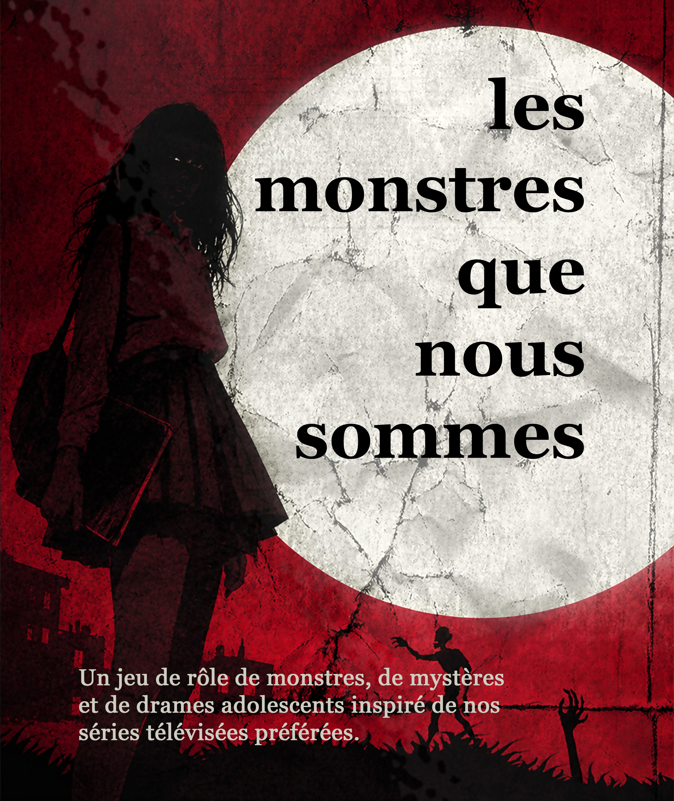

Jeu de rôle · Horreur adolescente · Système Skeleton
Un jeu de rôle de monstres, de mystères et de drames adolescents, inspiré de nos séries télévisées surnaturelles préférées.

Vous incarnez des lycéens ou de jeunes étudiants d'une petite ville fictive, entre mystères surnaturels, drames adolescents et horreur — dans la lignée de Buffy contre les vampires ou Teen Wolf. Vos personnages devront composer avec la complexité de leur vie d'adolescents et leur nature monstrueuse, tout en essayant de protéger leur ville des dangers qui y rôdent.
Les monstres que nous sommes est propulsé par le Skeleton, un système au d100 accessible et à lecture directe, quasiment sans calculs, qui met l'accent sur la montée en stress et la génération de drame propres à ce genre de récit.
Un système de jeu au d100 à lecture directe, quasiment sans calculs.
Accompagnées de leurs spécialités, pour des personnages riches et variés.
Des résistances physiques et mentales amenant à gérer le stress et les traumas des personnages.
Une gestion simple de l'équipement, des ressources, du niveau de vie, des économies et des dettes.
Une tension entre résultats, popularité et sérénité qui nourrit le drame lycéen.
Un système basé sur l'amitié (ou l'hostilité), le désir et l'admiration.
Toutes les valeurs de la fiche sont des pourcentages. On lance 1d100 : égal ou inférieur à la valeur testée, c'est un succès. Pas de tables à consulter, pas d'arithmétique — juste la tension du jet et ses conséquences.
Athlétisme 75, spécialité hockey +10 → seuil de réussite : 85.
Chaque créature met en avant ses côtés dramatiques, ses particularités, et sa lutte pour garder la maîtrise d'elle-même. Un stress surnaturel qui monte, une part sombre qui menace de tout emporter.
Composer avec une soif dévorante tout en luttant contre la perversion de la bête intérieure.
Mus par une faim de vivre insatiable, mais menacés de céder à leur rage primale sous la lune.
Un pouvoir qui appelle l'hubris et un livre des ombres dont l'abus menace de les corrompre.
Ils ressentent la pulsation de la nature et risquent de se retourner contre ce qui la détruit.
Le monde ne se résume pas à sa partie matérielle. Une dimension d'émotions le double, séparée par un voile dont l'épaisseur dépend des sentiments qui l'agitent — plus mince les nuits de fête, de pleine lune ou de veillée funèbre.
Le plan physique, celui où vos personnages ont un corps et une consistance. Les entités sans chair n'y séjournent qu'un instant.
Le seuil entre les mondes. Les émotions fortes l'amincissent ; l'indifférence et la froideur l'épaississent.
Un reflet émotionnel du nôtre, structuré par la résonance. On y croise fantômes, esprits et reflets — mondes de poche nés d'émotions cristallisées.
Qui comprend que l'univers est fait d'émotions et de résonances sait qu'on peut agir sur le monde en les manipulant. De ce savoir naissent trois grands courants — et les factions qui s'y rattachent.
« Le monde a besoin de sa part de mystère, mais en équilibre. »
« Le monde spirituel doit être renforcé et utilisé. »
« Moins d'émotions, moins de danger : un monde mesurable. »
Le livre complet : création de personnage, système de jeu, environnement académique et règles des créatures surnaturelles.
Télécharger le PDFLes fiches prêtes à imprimer pour vos joueurs, afin de suivre compétences, résistances, relations et équipement.
Télécharger le PDF